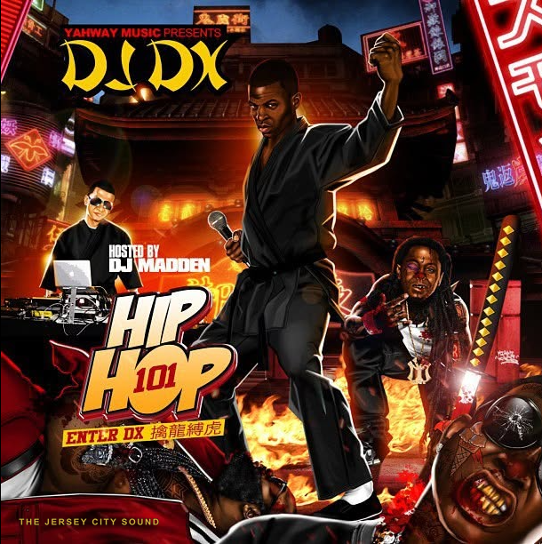
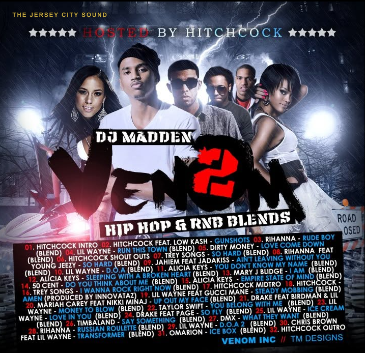
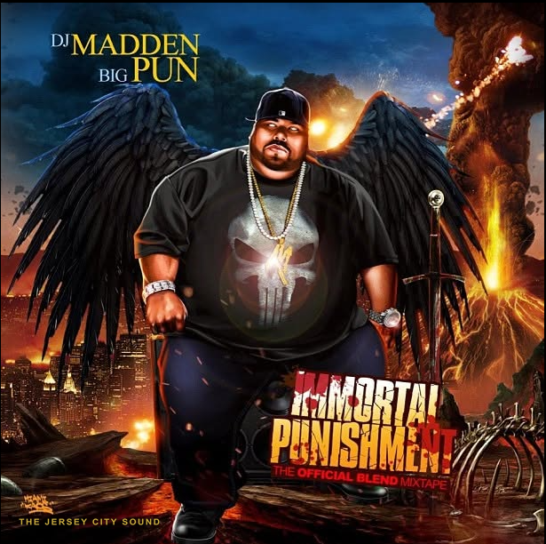
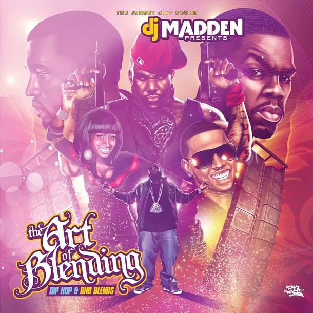
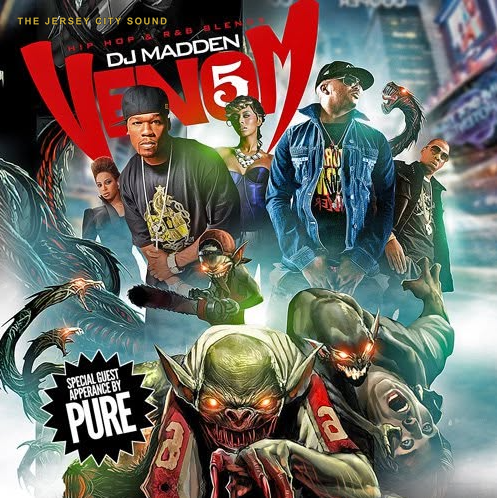
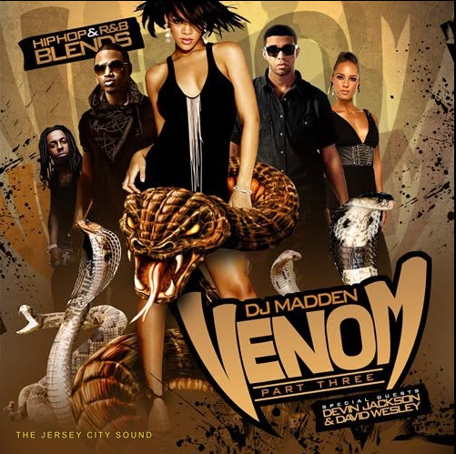
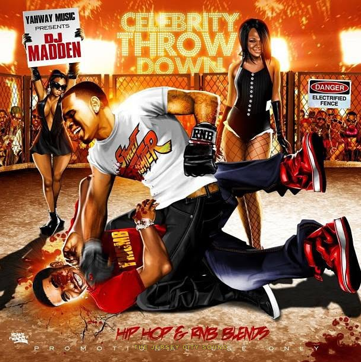
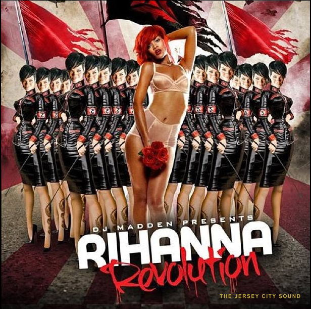
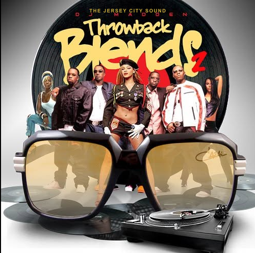

DJ Madden, born Steve Garcia, is a Jersey City DJ, turntablist, and producer who was put on by DJ Wizard and mentored by Mark Cee, placing him in the direct lineage of the city's most influential scene-builders.
In the Record§
He collaborated with DJ DX on a trilogy of studio albums: 'This Is Hip-Hop', 'The Unfortunate Child', and 'Made From Scratch' (2015, Apple Music), marking a formal recording output that sets him apart from many mixtape-only peers.
Beyond their album trilogy, he and DJ DX have released a run of underground hip-hop and rap singles — including “1000 Reasons” and “Keeps Me Going” — pairing classic boom-bap with the reggaeton and Latin-urban energy the pair are known for working into their live sets.
He sold mixtapes through Stan's Square Records alongside the city's top DJs and is active on Instagram as @officialdjmadden.
Mixtape Covers§
Cover art from DJ Madden's blend-mixtape catalog on Yahway Music.










Sources§
- WizTV Presents: The Jersey City DJ Documentary Vol. 1 (2006) — link
- Instagram @officialdjmadden — community identification, The Jersey City Sound, 2026 — link
- Made From Scratch — DJ DX & DJ Madden, Apple Music — link
- DJ DX artist profile, about.me/djdx (albums with DJ Madden) — link
- “1000 Reasons” and “Keeps Me Going” — DJ DX & DJ Madden (Apple Music; Spotify)
- Mixtape cover art from the DJ Madden archive (Yahway Music) — The Jersey City Sound
Wanted for this Entry§
The archive is looking for the following. If you can supply any of it, use the claim bar below.
- Active years
- Key tapes
- Photo